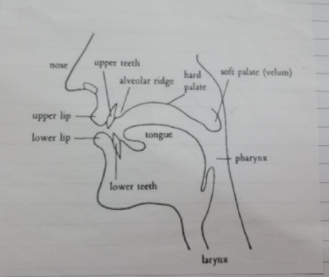
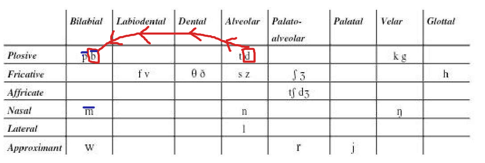
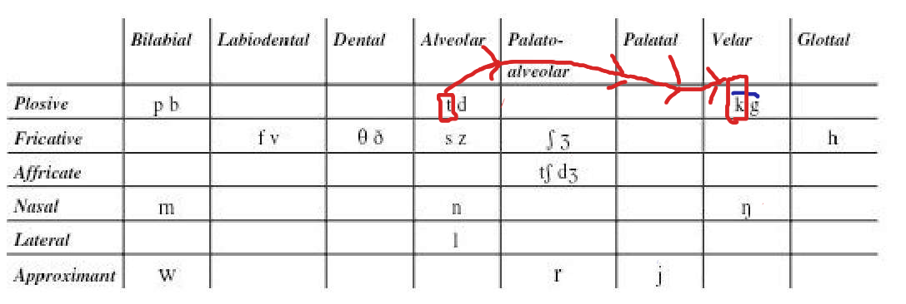

The speech organs & charts
Three diagrams that are referred to throughout these notes.



Phonetics vs. Phonology
Phonetics — the study of how sounds are produced, transmitted and perceived. It deals with the physical properties of speech sounds.
- Focuses on the production of sounds
- A descriptive tool for studying phonological aspects
- About the sounds of language
Phonology — the study of how sounds function in relation to each other in a language.
- About the sound systems of language
- Studies how sounds pattern and interact
- Different from phonetics: phonetics = sounds, phonology = sound systems
Consonants vs Vowels
What is a consonant? What is a vowel? In phonetics, a consonant is a speech sound produced with an obstruction or narrowing somewhere in the vocal tract (lips, teeth, tongue, palate, velum, glottis); the airflow is blocked, partly blocked, or made turbulent. A vowel is a speech sound produced with no significant obstruction — air flows freely through the mouth, and the sound is shaped mainly by tongue height/backness, lip rounding and length. Consonants typically sit at the edges of a syllable; vowels typically form its centre.
Consonants · Place of Articulation
The place of articulation is the point in the vocal tract where the airflow is obstructed.
Bilabial
Both lips brought together.
- /p/ voiceless pay
- /b/ voiced bay
- /m/ voiced may
Labiodental
Lower lip raised towards the upper front teeth.
- /f/ voiceless safe
- /v/ voiced save
Dental
Tip of the tongue touches the upper front teeth.
- /θ/ voiceless oath
- /ð/ voiced clothe
Alveolar
Tip of the tongue towards the alveolar ridge.
- /t/ voiceless too
- /s/ voiceless sue
- /d/ voiced do
- /z/ voiced zoo
- /n/ voiced nook
- /l/ voiced look
- /r/ voiced rook
Palato-alveolar
Blade of the tongue towards the palate behind the alveolar ridge.
- /ʃ/ voiceless pressure
- /tʃ/ voiceless batch
- /ʒ/ voiced pleasure
- /dʒ/ voiced badge
Palatal
Further back towards the velum.
- /j/ voiced yes, yellow, beauty, new
Velar
Back of the tongue towards the soft palate (velum).
- /k/ voiceless back
- /g/ voiced bag
- /ŋ/ voiced bang
- /w/ voiced why (velar with lip rounding)
Glottal
Air passes through the narrowed glottis.
- /h/ high
- /ʔ/ football [fuʔbɔːl] (glottal stop)
Consonants · Manner of Articulation
The manner of articulation is how the airflow is obstructed — completely, partially, or not at all.
Plosives
Complete closure, air blocked, released with a burst.
- /p/ voiceless bilabial — park
- /b/ voiced bilabial — bark
- /t/ voiceless alveolar — tar
- /d/ voiced alveolar — dark
- /k/ voiceless velar — car
- /g/ voiced velar — guard
Fricatives
Near-closure creates friction noise.
- /f/ voiceless labiodental — wife
- /v/ voiced labiodental — wives
- /θ/ voiceless dental — breath
- /ð/ voiced dental — breathe
- /s/ voiceless alveolar — sink
- /z/ voiced alveolar — zinc
- /ʃ/ voiceless palato-alveolar — nation
- /ʒ/ voiced palato-alveolar — evasion
- /h/ glottal — help
Affricates
Plosive + fricative, slow release.
- /tʃ/ voiceless palato-alveolar — chin, rich
- /dʒ/ voiced palato-alveolar — gin, ridge
Nasals
Complete closure, velum lowered, air escapes through the nose.
- /m/ voiced bilabial — ram
- /n/ voiced alveolar — ran
- /ŋ/ voiced velar — rang
Laterals
Air escapes around the sides of the tongue.
- /l/ voiced alveolar lateral
Approximants
The tongue approaches the roof of the mouth, no friction — all voiced.
- /r/ alveolar / post-alveolar — right, brown
- /j/ palatal — use, youth
- /w/ velar / labio-velar with lip rounding — why, twin, square
Clear l & Dark l
/l/ is a voiced alveolar lateral approximant: the tip of the tongue touches the alveolar ridge while the air escapes around the sides of the tongue. English has two main realisations of /l/, and which one you use depends on where the /l/ stands in the syllable.
Clear l [l]
Used before a vowel (onset position). The front of the tongue is raised towards the hard palate, which gives a “light”, fronted resonance. It is the “normal” l of light.
- light /laɪt/
- long /lɒŋ/
- leave /liːv/
- lovely /ˈlʌvli/
- play /pleɪ/ · clean /kliːn/
- yellow /ˈjeləʊ/ · million /ˈmɪljən/
Dark l [ɫ]
Used before a consonant and word-finally (coda position). The back of the tongue is raised towards the velum — the sound is velarized — which gives a darker, heavier resonance. The phonetic symbol for it is [ɫ], though in broad transcription it is still written /l/.
- milk /mɪlk/ → [mɪɫk]
- ball /bɔːl/ → [bɔːɫ]
- feel /fiːl/ → [fiːɫ]
- help /help/ → [heɫp]
- cold /kəʊld/ → [kəʊɫd]
- table /ˈteɪbl̩/ — syllabic l
Summary
- Clear l [l] — before a vowel: light, long, play, lovely.
- Dark l [ɫ] — before a consonant or at the end of a word: milk, help, ball, feel.
- In Southern British English /l/ is clear before vowels and dark everywhere else; in General American it is dark in both positions.
Vowels
Vowels are classified by tongue height, tongue backness, lip rounding and length.
Tongue height
- High (close): tongue raised close to the roof of the mouth — /iː/ see, /ɪ/ sit, /uː/ too, /ʊ/ put
- Mid: tongue halfway — /e/ bed, /ə/ banana, /ɜː/ girl, /ɔː/ door
- Low (open): tongue lowered, mouth more open — /æ/ cat, /ʌ/ cup, /ɑː/ car, /ɒ/ clock
Tongue backness
- Front: /iː/ see, /ɪ/ sit, /e/ bed, /æ/ cat
- Central: /ɜː/ girl, /ə/ banana, /ʌ/ cup
- Back: /uː/ too, /ʊ/ put, /ɔː/ door, /ɒ/ clock, /ɑː/ car
Lip rounding
- Rounded: /uː/, /ʊ/, /ɔː/, /ɒ/ — lips pushed forward
- Unrounded: all front & central vowels; also /ɑː/ (back but unrounded)
Length
Monophthong vs. Diphthong
- Monophthong — steady quality (one vowel): /iː/, /e/, /ɑː/, /ʌ/, /uː/, etc.
- Diphthong — gliding quality (a movement from one vowel to another): /eɪ/ take, /aɪ/ five, /əʊ/ no, /eə/ care
Function words vs. Content words
Content words (also called lexical words) carry the core meaning of the sentence — the “dictionary” information. They are an open class: new ones are created all the time (internet, selfie, download). Nouns, main verbs, adjectives and adverbs belong here. They are normally stressed and keep their full vowel sounds.
Function words (also called grammatical words) carry very little meaning on their own; they exist to show the grammatical relationships between the content words. They are a closed class: articles, prepositions, pronouns, auxiliaries, conjunctions, determiners and particles. They are normally unstressed and appear in weak forms with a reduced vowel (usually /ə/ or /ɪ/).
Examples
- Content:
table /ˈteɪbl̩/
running /ˈrʌnɪŋ/
beautiful /ˈbjuːtɪfl̩/
quickly /ˈkwɪkli/ - Function (strong → weak):
and /ænd/ → /ənd/ → /ən/
of /ɒv/ → /əv/
for /fɔː/ → /fə/
to /tuː/ → /tə/
have /hæv/ → /əv/
but /bʌt/ → /bət/
Main differences
- Meaning: content = lexical meaning; function = grammatical meaning.
- Class: content = open (new words appear); function = closed (fixed list).
- Stress: content words are usually stressed; function words are usually unstressed.
- Vowels: content words keep full vowels; function words reduce to weak forms.
- Connected speech: function words are the ones most affected by assimilation and linking (e.g. an illuminati → /ənɪluːmɪnˈɑːti/).
Citation form vs. Connected speech
Citation form is the isolated pronunciation of a word — the way it appears in a dictionary. It is produced slowly, carefully and with clear articulation, with the word's full (strong) form and full vowels, and with no influence from neighbouring sounds.
Connected speech is how words are actually pronounced in everyday, natural conversation. Words are not produced one by one; they form a continuous sequence of sounds in which each sound is affected by the sounds around it. This produces:
- Assimilation — ten players /ten ˈpleɪəz/ → /tem ˈpleɪəz/
- Linking — an apple /əˈnæpl̩/
- Weak forms — and /ænd/ → /ən/
- Gemination — black cat /blækːæt/
Linking
Linking (also called liaison) is the smooth joining of the final consonant of one word to the initial vowel of the next word, inside the same thought group. Instead of stopping after each word, the speaker pronounces the final consonant as if it began the following word, so the speech flows continuously.
The pattern is: consonant + vowel (C + V) across a word boundary.
- an apple /ən ˈæpl̩/ → /əˈnæpl̩/
- turn it off /tɜːn ɪt ɒf/ → /ˈtɜːnɪtɒf/
- pick it up /pɪk ɪt ʌp/ → /pɪkɪtʌp/
- not at all /nɒt ət ɔːl/ → /nɒtətɔːl/
- come in /kʌm ɪn/ → /kʌˈmɪn/
- find out /faɪnd aʊt/ → /faɪnˈdaʊt/
- take it easy /teɪk ɪt ˈiːzi/ → /teɪkɪtˈiːzi/
- leave it alone /liːv ɪt əˈləʊn/ → /liːvɪtəˈləʊn/
Gemination
Gemination (also called twinning or doubling) happens when the same consonant sound ends one word and begins the next one. Instead of pronouncing two separate consonants, the speaker holds the articulation once and lengthens it — the two sounds merge into one long consonant.
- black cat /blæk kæt/ → /blækːæt/
- big game /bɪg geɪm/ → /bɪgːeɪm/
- hot tea /hɒt tiː/ → /hɒtːiː/
- good day /gʊd deɪ/ → /gʊdːeɪ/
- some money /sʌm ˈmʌni/ → /sʌmːʌni/
- ten nails /ten neɪlz/ → /tenːeɪlz/
- this Saturday /ðɪs ˈsætədeɪ/ → /ðɪsːætədeɪ/
- book case /bʊk keɪs/ → /bʊkːeɪs/
- night time /naɪt taɪm/ → /naɪtːaɪm/
Assimilation
Assimilation is the process by which a sound changes in order to become more like a neighbouring sound. It makes speech smoother and easier to pronounce, because the articulators do not have to move as far or as fast between two positions. The change is usually in the place of articulation, but it can also affect voicing.
When the second sound influences the first one, the assimilation is regressive (or anticipatory) — this is the most common type in English. When the first sound influences the second, it is progressive.
Bilabialization
/d/ + /p,m,b/ = /b/ bad men /bæd men/ → /bæb men/
good morning /gʊd ˈmɔːnɪŋ/ → /gʊb ˈmɔːnɪŋ/
red pen /red pen/ → /reb pen/
good boy /gʊd bɔɪ/ → /gʊb bɔɪ/
handbag /ˈhændbæg/ → /ˈhæmbæg/

/t/ + /p,m,b/ = /p/ that man /ðæt mæn/ → /ðæp mæn/
that boy /ðæt bɔɪ/ → /ðæp bɔɪ/
white paper /waɪt ˈpeɪpə/ → /waɪp ˈpeɪpə/
don't be late /dəʊnt biː leɪt/ → /dəʊmp biː leɪt/

/n,ŋ/ + /p,m,b/ = /m/ ten players /ten ˈpleɪəz/ → /tem ˈpleɪəz/
in my /ɪn maɪ/ → /ɪm maɪ/
one moment /wʌn ˈməʊmənt/ → /wʌm ˈməʊmənt/
can be /kæn biː/ → /kæm biː/

Alveolarization
/ŋ/ + /t,d,n/ = /n/ learning to drive /ˈlɜːnɪŋ tə draɪv/ → /ˈlɜːnɪntə draɪv/
going to /ˈgəʊɪŋ tə/ → /ˈgəʊɪntə/
wrong number /rɒŋ ˈnʌmbə/ → /rɒn ˈnʌmbə/
sing to me /sɪŋ tə miː/ → /sɪn tə miː/
long time /lɒŋ taɪm/ → /lɒn taɪm/
long day /lɒŋ deɪ/ → /lɒn deɪ/
kingdom /ˈkɪŋdəm/ → /ˈkɪndəm/
something to eat /ˈsʌmθɪŋ tə iːt/ → /ˈsʌmθɪn tə iːt/

Palato-alveolarization
/d/ + /j/ = /dʒ/ did you /dɪd juː/ → /dɪdʒuː/
would you /wʊd juː/ → /wʊdʒuː/
could you /kʊd juː/ → /kʊdʒuː/
need you /niːd juː/ → /niːdʒuː/

/t/ + /j/ = /tʃ/ want you /wɒnt juː/ → /wɒntʃuː/
don't you /dəʊnt juː/ → /dəʊntʃuː/
can't you /kɑːnt juː/ → /kɑːntʃuː/
meet you /miːt juː/ → /miːtʃuː/
last year /lɑːst jɪə/ → /lɑːstʃɪə/

/s/ + /ʃ,tʃ,dʒ,j/ = /ʃ/ this shop /ðɪs ʃɒp/ → /ðɪʃɒp/
miss you /mɪs juː/ → /mɪʃuː/
this year /ðɪs jɪə/ → /ðɪʃɪə/
nice shoes /naɪs ʃuːz/ → /naɪʃuːz/

/z/ + /ʃ,tʃ,j/ = /ʒ/ has she /hæz ʃiː/ → /hæʒʃiː/
does she /dʌz ʃiː/ → /dʌʒʃiː/
as you like /əz juː laɪk/ → /əʒuː laɪk/
is your /ɪz jɔː/ → /ɪʒɔː/

Velarization
/t/ + /k,g/ = /k/ that girl /ðæt gɜːl/ → /ðæk gɜːl/
white coat /waɪt kəʊt/ → /waɪk kəʊt/
hot cakes /hɒt keɪks/ → /hɒk keɪks/
it came /ɪt keɪm/ → /ɪk keɪm/
sweet girl /swiːt gɜːl/ → /swiːk gɜːl/

/d/ + /k,g/ = /g/ good guy /gʊd gaɪ/ → /gʊg gaɪ/
red car /red kɑː/ → /reg kɑː/
bad cold /bæd kəʊld/ → /bæg kəʊld/
could go /kʊd gəʊ/ → /kʊg gəʊ/

/n/ + /k,g/ = /ŋ/ ten cups /ten kʌps/ → /teŋ kʌps/
in case /ɪn keɪs/ → /ɪŋ keɪs/
sun cream /sʌn kriːm/ → /sʌŋ kriːm/
green grass /griːn grɑːs/ → /griːŋ grɑːs/
own goal /əʊn gəʊl/ → /əʊŋ gəʊl/

Linking R in brittish English
Linking R
The word is spelled with an “r” (or “re”) at the end — far, four, here, better, mother. Said alone, or before a consonant, the /r/ is silent. But when the next word begins with a vowel, that /r/ is pronounced and “links” the two words together. The /r/ was always historically there; it is simply kept.
- far away /fɑː əˈweɪ/ → /fɑːr əˈweɪ/
- four apples /fɔː ˈæpl̩z/ → /fɔːr ˈæpl̩z/
- here and there /hɪə ənd ðeə/ → /hɪər ənd ðeə/
- better and better /ˈbetə ənd ˈbetə/ → /ˈbetər ənd ˈbetə/
- mother and father /ˈmʌðə ənd ˈfɑːðə/ → /ˈmʌðər ənd ˈfɑːðə/
- her own /hɜː əʊn/ → /hɜːr əʊn/
- your uncle /jɔː ˈʌŋkl̩/ → /jɔːr ˈʌŋkl̩/
- more or less /mɔː ɔː les/ → /mɔːr ɔː les/
- after all /ˈɑːftə ɔːl/ → /ˈɑːftər ɔːl/
- a pair of shoes /ə peə əv ʃuːz/ → /ə peər əv ʃuːz/
Transcription hints
Practical tips for making transcriptions, so you make sure you don’t mess up:
- Use / / for broad (phonemic) and [ ] for narrow (allophonic) transcription.
- Always mark primary stress ˈ before the stressed syllable.
- Transcribe what you hear, not the spelling (for example ‘going to’ = /ˈɡəʊɪŋ tə/).
- There are no capital letters, commas, full stops/periods, question marks in transcriptions.
- The symbol | is used to mark a point where a speaker of the text might introduce a brief pause. Oftentimes this coincides with a place where a punctuation mark is present on the text, but not always.
- * is used to indicate that the following word is a name.
- Many words in connected speech are pronounced (and should be transcribed) differently in different environments.
- Be careful to think about how speech sounds and to avoid being misled by the spelling.
- Sometimes the ordinary spelling version uses letters which do not correspond to any sound at all, so they shouldn’t appear in transcription.
/ / = broad (phonemic)
[ ] = narrow (allophonic)
ˈ = primary stress
| = brief pause
* = the next word is a name.
Transcription for Brittish Weak Forms words + Standard US Equivalents
| Word | Rank | RP (Weak Form) | US Equivalent |
|---|---|---|---|
| the | 1 | /ðə/ | /ðə/ |
| be | 2 | /bi/ | /bi/ |
| to | 3 | /tə/ | /tə/ |
| and | 4 | /ən/ | /ən/ |
| a | 5 | /ə/ | /ə/ |
| of | 6 | /əv/ | /əv/ |
| I | 7 | /aɪ/ | /aɪ/ |
| in | 8 | /ɪn/ | /ɪn/ |
| that | 9 | /ðət/ | /ðət/ |
| you | 10 | /jə/ | /jə/ |
| have | 11 | /həv/ | /həv/ |
| it | 12 | /ɪt/ | /ɪt/ |
| do | 13 | /də/ | /də/ |
| for US | 14 | /fə/ | /fər/ |
| on US | 15 | /ɒn/ | /ɑːn/ |
| with US | 16 | /wɪð/ | /wɪθ/ |
| he | 17 | /hi/ | /hi/ |
| this | 18 | /ðɪs/ | /ðɪs/ |
| as | 19 | /əz/ | /əz/ |
| we | 20 | /wi/ | /wi/ |
| but | 21 | /bət/ | /bət/ |
| not US | 22 | /nɒt/ | /nɑːt/ |
| they | 23 | /ðeɪ/ | /ðeɪ/ |
| what US | 24 | /wɒt/ | /wʌt/ |
| at | 25 | /ət/ | /ət/ |
| my | 26 | /maɪ/ | /maɪ/ |
| his | 27 | /hɪz/ | /hɪz/ |
| get | 28 | /ɡɛt/ | /ɡɛt/ |
| go US | 29 | /ɡəʊ/ | /ɡoʊ/ |
| from | 30 | /frəm/ | /frəm/ |
| will | 31 | /wɪl/ | /wɪl/ |
| say | 32 | /seɪ/ | /seɪ/ |
| can | 33 | /kən/ | /kən/ |
| by | 34 | /baɪ/ | /baɪ/ |
| or US | 35 | /ɔː/ | /ɔːr/ |
| all | 36 | /ɔːl/ | /ɔːl/ |
| me | 37 | /mɪ/ | /mɪ/ |
| she | 38 | /ʃi/ | /ʃi/ |
| so US | 39 | /səʊ/ | /soʊ/ |
| there | 40 | /ðə/ | /ðə/ |
| about | 41 | /əˈbaʊt/ | /əˈbaʊt/ |
| your US | 42 | /jɔː/ | /jʊr/ |
| one | 43 | /wʌn/ | /wʌn/ |
| if | 44 | /ɪf/ | /ɪf/ |
| her US | 45 | /ə/ | /ər/ |
| out | 46 | /aʊt/ | /aʊt/ |
| just | 47 | /dʒʌst/ | /dʒʌst/ |
| when | 48 | /wɛn/ | /wɛn/ |
| like | 49 | /laɪk/ | /laɪk/ |
| up | 50 | /ʌp/ | /ʌp/ |
| who | 51 | /hu/ | /hu/ |
| make | 52 | /meɪk/ | /meɪk/ |
| would | 53 | /wəd/ | /wəd/ |
| no US | 54 | /nəʊ/ | /noʊ/ |
| their US | 55 | /ðɛə/ | /ðɛr/ |
| time | 56 | /taɪm/ | /taɪm/ |
| see | 57 | /siː/ | /siː/ |
| more US | 58 | /mɔː/ | /mɔːr/ |
| know US | 59 | /nəʊ/ | /noʊ/ |
| come | 60 | /kʌm/ | /kʌm/ |
| think | 61 | /θɪŋk/ | /θɪŋk/ |
| take | 62 | /teɪk/ | /teɪk/ |
| him | 63 | /ɪm/ | /ɪm/ |
| how | 64 | /haʊ/ | /haʊ/ |
| them | 65 | /ðəm/ | /ðəm/ |
| want US | 66 | /wɒnt/ | /wɑːnt/ |
| other US | 67 | /ˈʌðə/ | /ˈʌðər/ |
| could | 68 | /kəd/ | /kəd/ |
| now | 69 | /naʊ/ | /naʊ/ |
| year US | 70 | /jɪə/ | /jɪr/ |
| look | 71 | /lʊk/ | /lʊk/ |
| right | 72 | /raɪt/ | /raɪt/ |
| into | 73 | /ˈɪntə/ | /ˈɪntə/ |
| people | 74 | /ˈpiːpəl/ | /ˈpiːpəl/ |
| our US | 75 | /aʊə/ | /aʊər/ |
| which | 76 | /wɪtʃ/ | /wɪtʃ/ |
| then | 77 | /ðɛn/ | /ðɛn/ |
| here US | 78 | /hɪə/ | /hɪr/ |
| back | 79 | /bæk/ | /bæk/ |
| work US | 80 | /wɜːk/ | /wɜːrk/ |
| than | 81 | /ðən/ | /ðən/ |
| some | 82 | /səm/ | /səm/ |
| way | 83 | /weɪ/ | /weɪ/ |
| only US | 84 | /ˈəʊnli/ | /ˈoʊnli/ |
| tell | 85 | /tɛl/ | /tɛl/ |
| because US | 86 | /bɪˈkɒz/ | /bɪˈkɔːz/ |
| thing | 87 | /θɪŋ/ | /θɪŋ/ |
| use | 88 | /juːs/ | /juːs/ |
| need | 89 | /niːd/ | /niːd/ |
| two | 90 | /tuː/ | /tuː/ |
| day | 91 | /deɪ/ | /deɪ/ |
| even | 92 | /ˈiːvən/ | /ˈiːvən/ |
| these | 93 | /ðiːz/ | /ðiːz/ |
| where US | 94 | /wɛə/ | /wɛr/ |
| give | 95 | /ɡɪv/ | /ɡɪv/ |
| man | 96 | /mæn/ | /mæn/ |
| find | 97 | /faɪnd/ | /faɪnd/ |
| us | 98 | /əs/ | /əs/ |
| also US | 99 | /ˈɔːlsəʊ/ | /ˈɔːlsoʊ/ |
| much | 100 | /mʌtʃ/ | /mʌtʃ/ |
| new US | it appears | /njuː/ | /nuː/ |
| first US | it appears | /fɜːst/ | /fɜːrst/ |
| most US | it appears | /məʊst/ | /moʊst/ |
| those US | it appears | /ðəʊz/ | /ðoʊz/ |
| really US | it appears | /ˈrɪəli/ | /ˈriːəli/ |
| never US | it appears | /ˈnɛvə/ | /ˈnɛvər/ |
| before US | it appears | /bɪˈfɔː/ | /bɪˈfɔːr/ |
| off US | it appears | /ɒf/ | /ɔːf/ |
| long US | it appears | /lɒŋ/ | /lɔːŋ/ |
| ask US | it appears | /ɑːsk/ | /æsk/ |
| show US | it appears | /ʃəʊ/ | /ʃoʊ/ |
| world US | it appears | /wɜːld/ | /wɜːrld/ |
| start US | it appears | /stɑːt/ | /stɑːrt/ |
| last US | it appears | /lɑːst/ | /læst/ |
| own US | it appears | /əʊn/ | /oʊn/ |
| home US | it appears | /həʊm/ | /hoʊm/ |
| oh US | it appears | /əʊ/ | /oʊ/ |
| another US | it appears | /əˈnʌðə/ | /əˈnʌðər/ |
| turn US | it appears | /tɜːn/ | /tɜːrn/ |
| family US | it appears | /ˈfæmɪli/ | /ˈfæməli/ |
| both US | it appears | /bəʊθ/ | /boʊθ/ |
| old US | it appears | /əʊld/ | /oʊld/ |
| hear US | it appears | /hɪə/ | /hɪr/ |
| better US | it appears | /ˈbɛtə/ | /ˈbɛtər/ |
| yeah US | it appears | /jɛə/ | /jæ/ |
| sure US | it appears | /ʃɔː/ | /ʃʊr/ |
| problem US | it appears | /ˈprɒbləm/ | /ˈprɑːbləm/ |
| part US | it appears | /pɑːt/ | /pɑːrt/ |
| far US | it appears | /fɑː/ | /fɑːr/ |
| hold US | it appears | /həʊld/ | /hoʊld/ |
| stop US | it appears | /stɒp/ | /stɑːp/ |
| open US | it appears | /ˈəʊpən/ | /ˈoʊpən/ |
| job US | it appears | /dʒɒb/ | /dʒɑːb/ |
| over US | it appears | /ˈəʊvə/ | /ˈoʊvər/ |
| after US | it appears | /ˈɑːftə/ | /ˈæftər/ |
| called US | it appears | /kɔːld/ | /kɑːld/ |
| what's US | it appears | /wɒts/ | /wʌts/ |
| cold US | it appears | /kəʊld/ | /koʊld/ |
| bears US | it appears | /bɛəz/ | /bɛrz/ |
| tired US | it appears | /ˈtaɪəd/ | /ˈtaɪərd/ |
| gone US | it appears | /ɡɒn/ | /ɡɔːn/ |
| answer US | it appears | /ˈɑːnsə/ | /ˈænsər/ |
| nobody US | it appears | /ˈnəʊbədi/ | /ˈnoʊbədi/ |
| beer US | it appears | /bɪə/ | /bɪr/ |
| ever US | it appears | /ˈɛvə/ | /ˈɛvər/ |
| necessary US | it appears | /ˈnɛsəsəri/ | /ˈnɛsəsɛri/ |
| exercises US | it appears | /ˈɛksəsaɪzɪz/ | /ˈɛksərsaɪzɪz/ |
| understand US | it appears | /ˌʌndəˈstænd/ | /ˌʌndərˈstænd/ |
| students US | it appears | /ˈstjuːdənts/ | /ˈstuːdənts/ |
| architect US | it appears | /ˈɑːkɪtɛkt/ | /ˈɑːrkɪtɛkt/ |
| repaired US | it appears | /rɪˈpɛəd/ | /rɪˈperd/ |
| broken US | it appears | /ˈbrəʊkən/ | /ˈbroʊkən/ |
| classes US | it appears | /ˈklɑːsɪz/ | /ˈklæsɪz/ |
| morning US | it appears | /ˈmɔːnɪŋ/ | /ˈmɔːrnɪŋ/ |
| yourself US | it appears | /jɔːˈsɛlf/ | /jʊrˈsɛlf/ |
| crosswords US | it appears | /ˈkrɒswɜːdz/ | /ˈkrɔːswɜːrdz/ |
| art US | it appears | /ɑːt/ | /ɑːrt/ |
| going US | it appears | /ˈɡəʊɪŋ/ | /ˈɡoʊɪŋ/ |
| copied US | it appears | /ˈkɒpid/ | /ˈkɑːpid/ |
| burnt US | it appears | /bɜːnt/ | /bɜːrnt/ |
| coat US | it appears | /kəʊt/ | /koʊt/ |
| can't US | it appears | /kɑːnt/ | /kænt/ |
| got US | it appears | /ɡɒt/ | /ɡɑːt/ |
| shot US | it appears | /ʃɒt/ | /ʃɑːt/ |
| window US | it appears | /ˈwɪndəʊ/ | /ˈwɪndoʊ/ |
| broke US | it appears | /brəʊk/ | /broʊk/ |
| lot US | it appears | /lɒt/ | /lɑːt/ |
| mountains US | it appears | /ˈmaʊntɪnz/ | /ˈmaʊntənz/ |
| life | it appears | /laɪf/ | /laɪf/ |
| any | it appears | /ˈɛni/ | /ˈɛni/ |
| should | it appears | /ʃəd/ | /ʃəd/ |
| call | it appears | /kɔːl/ | /kɔːl/ |
| down | it appears | /daʊn/ | /daʊn/ |
| too | it appears | /tuː/ | /tuː/ |
| why | it appears | /waɪ/ | /waɪ/ |
| feel | it appears | /fiːl/ | /fiːl/ |
| through | it appears | /θruː/ | /θruː/ |
| try | it appears | /traɪ/ | /traɪ/ |
| something | it appears | /ˈsʌmθɪŋ/ | /ˈsʌmθɪŋ/ |
| many | it appears | /ˈmɛni/ | /ˈmɛni/ |
| let | it appears | /lɛt/ | /lɛt/ |
| help | it appears | /hɛlp/ | /hɛlp/ |
| little | it appears | /ˈlɪtəl/ | /ˈlɪtəl/ |
| may | it appears | /meɪ/ | /meɪ/ |
| child | it appears | /tʃaɪld/ | /tʃaɪld/ |
| mean | it appears | /miːn/ | /miːn/ |
| woman | it appears | /ˈwʊmən/ | /ˈwʊmən/ |
| still | it appears | /stɪl/ | /stɪl/ |
| love | it appears | /lʌv/ | /lʌv/ |
| great | it appears | /ɡreɪt/ | /ɡreɪt/ |
| leave | it appears | /liːv/ | /liːv/ |
| around | it appears | /əˈraʊnd/ | /əˈraʊnd/ |
| talk | it appears | /tɔːk/ | /tɔːk/ |
| school | it appears | /skuːl/ | /skuːl/ |
| keep | it appears | /kiːp/ | /kiːp/ |
| put | it appears | /pʊt/ | /pʊt/ |
| while | it appears | /waɪl/ | /waɪl/ |
| place | it appears | /pleɪs/ | /pleɪs/ |
| big | it appears | /bɪɡ/ | /bɪɡ/ |
| same | it appears | /seɪm/ | /seɪm/ |
| such | it appears | /sʌtʃ/ | /sʌtʃ/ |
| three | it appears | /θriː/ | /θriː/ |
| again | it appears | /əˈɡɛn/ | /əˈɡɛn/ |
| change | it appears | /tʃeɪndʒ/ | /tʃeɪndʒ/ |
| play | it appears | /pleɪ/ | /pleɪ/ |
| each | it appears | /iːtʃ/ | /iːtʃ/ |
| always | it appears | /ˈɔːlweɪz/ | /ˈɔːlweɪz/ |
| high | it appears | /haɪ/ | /haɪ/ |
| every | it appears | /ˈɛvri/ | /ˈɛvri/ |
| point | it appears | /pɔɪnt/ | /pɔɪnt/ |
| run | it appears | /rʌn/ | /rʌn/ |
| state | it appears | /steɪt/ | /steɪt/ |
| away | it appears | /əˈweɪ/ | /əˈweɪ/ |
| happen | it appears | /ˈhæpən/ | /ˈhæpən/ |
| might | it appears | /maɪt/ | /maɪt/ |
| house | it appears | /haʊs/ | /haʊs/ |
| move | it appears | /muːv/ | /muːv/ |
| become | it appears | /bɪˈkʌm/ | /bɪˈkʌm/ |
| seem | it appears | /siːm/ | /siːm/ |
| hand | it appears | /hænd/ | /hænd/ |
| between | it appears | /bɪˈtwiːn/ | /bɪˈtwiːn/ |
| end | it appears | /ɛnd/ | /ɛnd/ |
| friend | it appears | /frɛnd/ | /frɛnd/ |
| live | it appears | /lɪv/ | /lɪv/ |
| name | it appears | /neɪm/ | /neɪm/ |
| few | it appears | /fjuː/ | /fjuː/ |
| believe | it appears | /bɪˈliːv/ | /bɪˈliːv/ |
| night | it appears | /naɪt/ | /naɪt/ |
| since | it appears | /sɪns/ | /sɪns/ |
| best | it appears | /bɛst/ | /bɛst/ |
| yes | it appears | /jɛs/ | /jɛs/ |
| guy | it appears | /ɡaɪ/ | /ɡaɪ/ |
| bad | it appears | /bæd/ | /bæd/ |
| next | it appears | /nɛkst/ | /nɛkst/ |
| bring | it appears | /brɪŋ/ | /brɪŋ/ |
| week | it appears | /wiːk/ | /wiːk/ |
| head | it appears | /hɛd/ | /hɛd/ |
| without | it appears | /wɪˈðaʊt/ | /wɪˈðaʊt/ |
| write | it appears | /raɪt/ | /raɪt/ |
| enough | it appears | /ɪˈnʌf/ | /ɪˈnʌf/ |
| anything | it appears | /ˈɛnɪθɪŋ/ | /ˈɛnɪθɪŋ/ |
| american | it appears | /əˈmɛrɪkən/ | /əˈmɛrɪkən/ |
| face | it appears | /feɪs/ | /feɪs/ |
| nothing | it appears | /ˈnʌθɪŋ/ | /ˈnʌθɪŋ/ |
| must | it appears | /məst/ | /məst/ |
| story | it appears | /ˈstɔːri/ | /ˈstɔːri/ |
| kid | it appears | /kɪd/ | /kɪd/ |
| begin | it appears | /bɪˈɡɪn/ | /bɪˈɡɪn/ |